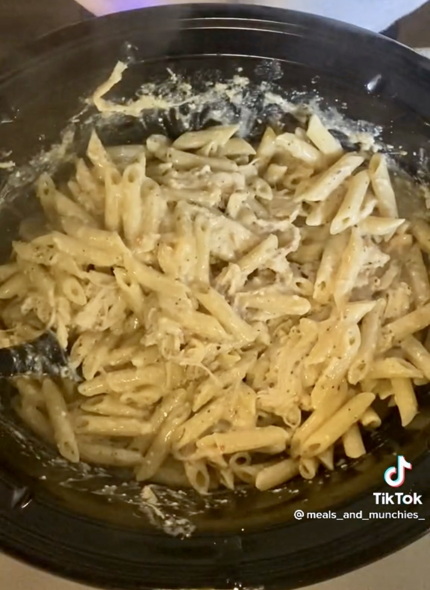

Garlic Parmesan Chicken Pasta
A Slow-Cooker Recipe

Ingredients
You will need:
- 5 Chicken breasts
- 2 jars of Garlic Parmesan wing sauce (store brand is fine, Buffalo Wild Wings is per recipe)
- Whole Milk or Heavy Cream
- 2 1# packages of shredded parmesan cheese in a pouch
- 2 blocks cream cheese
- 2 boxes Penne or Penne Rigate pasta
- optional: Frozen Peas
- optional: Powdered parmesan cheese
Directions:
- Lay chicken breasts in bottom of slow-cooker.
- Add both bottles of garlic parmesan wing sauce, and then fill the jars with milk or cream, shaking to release rest of sauce and add to pot.
- Cut up blocks of cream cheese into 4 equal sized blocks each and put on top of chicken.
- Pour both bags of parmesan cheese on top.
- Set slow-cooker to low for 8 hours or high for 4 hours and cover.
- In the last 30 minutes of cooking, add frozen peas, if desired.
- Cook Penne per box directions, drain, and add pasta to sauce when fully cooked.
- Add powdered parmesan cheese to top, if desired. Serve hot.
Go back to homepage